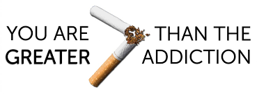

On 24.06.2018 I smoked my last cigarrete. I have some cigarettes left on the package however I just did not smoke them. I keep them still in the house in order to resist the temptation to smoke when it arises, even though I am not convienced that this is the best tactic.
Already I feel like I am gaining much free time. When before I had to go outside to smoke obsessively now I am suprised of how much time and energy this saves me.
When I have the urge to smoke, I stand up and just drink a glass of water. The urge comes back pretty offten. Sometimes I would drink coffee instead to keep my mouth "busy" however I believe that once someone connects smoking with drinking coffee, the mere fact that you drink coffee it creates a subsequent lust for smoking. I am trying to break this connection.
This book was really helpful. Once I read it last year I was able to quit for 7 months. Once I start forgetting what I had learn throught the book I started to smoke again. This time I quit without reading the book, however I am planning to listen to the audiobook version since I want to make sure that I will not be tempted to start again.